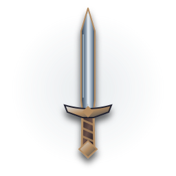
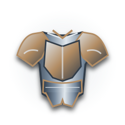

Waffe
Level –
Grundschaden: –
Materialien laden …
Besiegt die Wächter gemeinsam und erweitert eure Schmiedestufen. Die freigeschalteten Level gelten für alle drei – Rohstoffe und Aufwertungen bleiben persönlich.
Nach Boss 10 könnt ihr Waffe und Rüstung bis Level 2 aufwerten. Jede Stufe verdoppelt den Grundwert. Benötigte Rohstoffe werden erst beim serverbestätigten Versuch verbraucht. Spätere Level erfordern weitere gemeinsame Boss-Siege.
Verbinde die Schmiede …
Heldenklasse wird geladen …


Diese Ausbauschmiede verarbeitet nur die neuen Level 1–10. Bereits existierende Ausrüstung über Level 10 bleibt erhalten und wird hier nicht automatisch herabgestuft. Das bisherige Schmiedemenü wird bis zur vollständigen Migration getrennt behandelt.